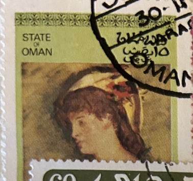
| SOURCE | TITLE| IMAGE MATCH | click to source page |
| www.dreamstime.com | Blond Woman with Bare Breasts. Blond. Woman. Bare. Breasts ... | 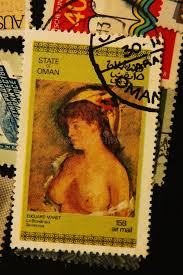 |
| www.ebay.com | Murillo, Rotari, Henner, Jean-B.Greuze. World Master Piece ... | 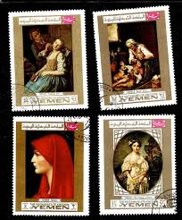 |
| www.ebay.com | Stamps YEMEN 1996 The 50th Anniversary of UNICEF 1996 #32 | eBay | 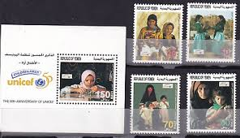 |
| www.lastdodo.com | Edouard Manet Blonde woman with bare breasts UNESCO 15 (1973 ... | 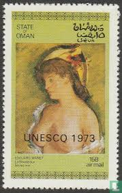 |
| en.todocoleccion.net | omán 1972 - hb flores .- - Buy Stamps about art on todocoleccion | 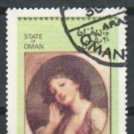 |
| www.alamy.com | Alexander rutsch hi-res stock photography and images - Alamy | 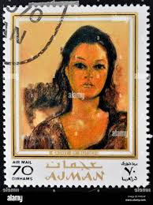 |
| collectorscornerusa.com | Ajman 1969 Stamp Goya Painting Clothed #119 | 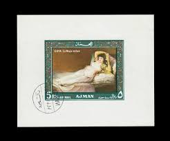 |
| www.ebay.com | OMAN - 1972 CTO NUDES - SHEET OF EIGHT (FOLDED) - K16e | eBay | 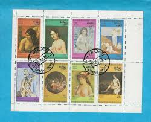 |
| colnect.com | Postsegel: Greuze (Oman (steat fan): Net-offisjele ... | 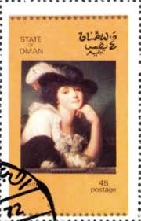 |
| www.shutterstock.com | Arabic Stamps Postcards: Over 2,049 Royalty-Free Licensable ... | 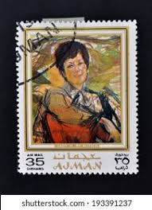 |
| championstamp.com | Mint, XXXLH - Champion Stamp | 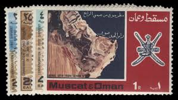 |
| m.poppe-stamps.com | Poppe Stamps: State of Oman, 3000, 55555, Problem Stamp ... | 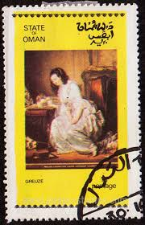 |
| www.instagram.com | Postage stamps have existed since 1840. All countries issue ... | 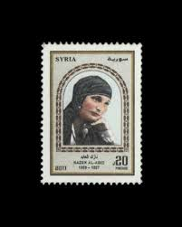 |
| www.facebook.com | The Sultanate of Oman is considered a melting pot of human ... | 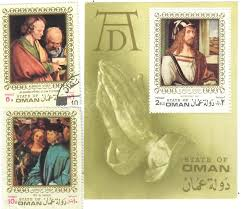 |
| www.ebay.com | Oman State 1972 Error Stamps Printed On Gum | eBay | 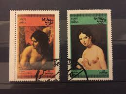 |
| www.worthpoint.com | The Genius of Michelangelo ~ Stamps of Ajman ~ World of ... | 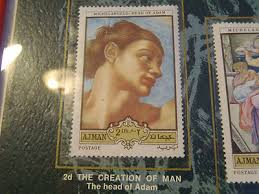 |
| commons.wikimedia.org | File:Stamp of Ajman - 1967 - Colnect 377478 - Fille a ... | 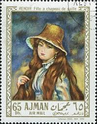 |
| www.alamy.com | Child painting stamp hi-res stock photography and images ... | 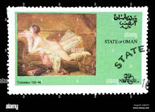 |
| www.hipstamp.com | Syrian Arab Republic 45p The Beauty of Palmyra Gold used ... | 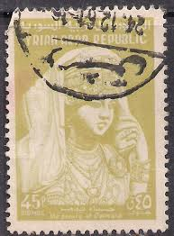 |
| postalmuseum.si.edu | Oman | National Postal Museum | 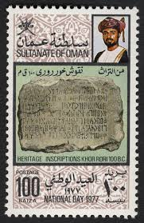 |
| www.bobshop.co.za | Oman - State of Oman - 1970 - Paintings Miniature Sheet was ... | 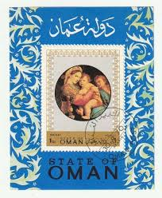 |
| www.mysticstamp.com | MP1678 - Napoleon Bonaparte, 300 Different Stamps - Mystic ... | 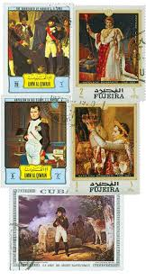 |
| www.redbubble.com | Lebanese old" Art Print by kellykhoury | Redbubble | 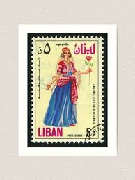 |
| www.reddit.com | Collection of postage stamps in South Yemen, 1980s. : r ... | 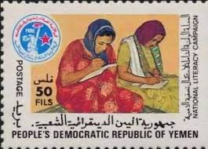 |
| www.zobbel.de | Palestine Stamps - Palestinian National Authority 2005 | 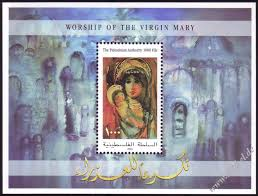 |
| www.itsnicethat.com | Dive into the Syrian Stamp Archive for some bite-sized ... | 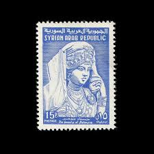 |
| www.shutterstock.com | Arabic Stamps Postcards: Over 2,049 Royalty-Free Licensable ... | 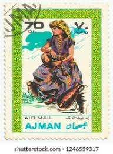 |
| aukro.cz | Oman -1970 -UMĚNI - Akta - -krásná práce -Tizian | Aukro | 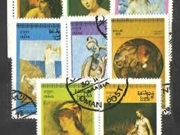 |
| www.pinterest.com | Sultanate of Oman stamps | 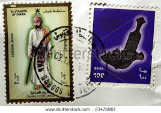 |
| www.sahibinden.com | Foreign / TARİHİ ANTİKA PULLAR on sahibinden.com - 1296617555 | 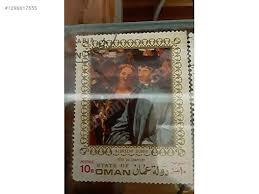 |
| www.instagram.com | Bull", 2022. 21 x 16 cm. Acrylic and colour pencils on paper ... | 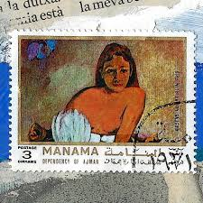 |
| www.maxstern.com.au | Algeria 2023 Traditional Costumes Set of 4 Stamps MUH | 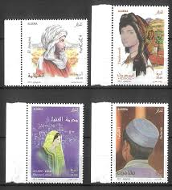 |
| www.istockphoto.com | Oman Postage Stamps Stock Photo - Download Image Now - Adult ... | 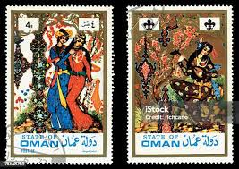 |
| arablitpoetry.substack.com | Wednesday Poetry: Fowziyah Abu Khalid's 'Wedding' | |
| www.mysticstamp.com | 3807a - 2003 37c Mary Cassatt Paintings, block of 4 stamps ... | |
| www.dreamstime.com | 127 Costume Pictogram Stock Photos - Free & Royalty-Free ... | 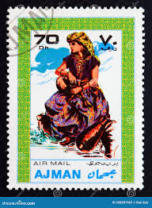 |
| www.bobshop.co.za | Yemen - Yemen 1969 Paintings by Rembrandt 2 Used Hinged ... | 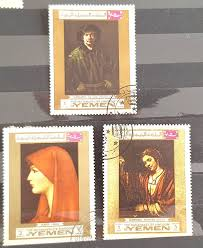 |
| thestampforum.boards.net | Oman : The Sultanate of Oman : | The Stamp Forum (TSF) | 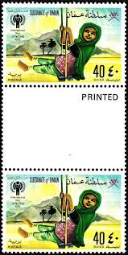 |
| www.freestampcatalogue.com | Stamps from Manama - Freestampcatalogue.com - The free ... | 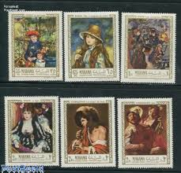 |
| www.reddit.com | Iraq's 1967 stamps of cultural clothes : r/philately | 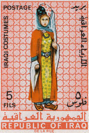 |
| www.pinterest.com | 85 تنابر ideas | postal stamps, postage stamps, postage ... | 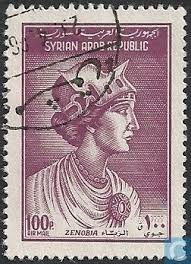 |
| www.etsy.com | Vintage Stamps Collection Series 7/mahra State South Arabia ... | 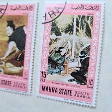 |
| www.hipstamp.com | Search "Oman 1989" / HipStamp | 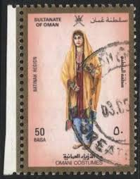 |
| golowesstamps.com | Afghanistan Illegal Stamps Page 6 | 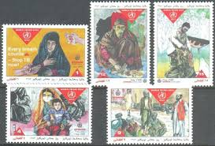 |
| www.kitantik.com | Yemen Pulu - Yemen Stamp - Postadan Geçmiş Pul Filateli ... | 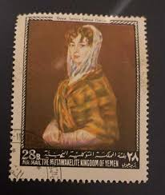 |
| collections.reading.ac.uk | Postal Notation: Melanie Daiken & Samuel Beckett - Special ... | 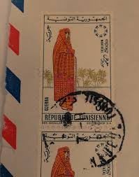 |
| abrostamps.com | Iraq Stamps – ABRO Stamps & Coins | 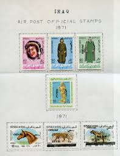 |
| www.gettyimages.com | 212 Jesus Velazquez Stock Photos, High-Res Pictures, and ... | 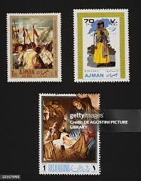 |
| ahradwani.com | Palstine – UAR | Ali's Photography Space... | 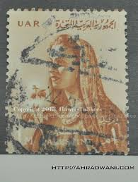 |
| digital.sciencehistory.org | Postcard with Yemen postage stamp commemorating the ... | 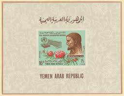 |
| www.ebay.com | Oman. Scott's #s 212-3 and 216B . Used. sal's stamp store ... | 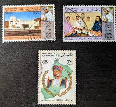 |
| www.researchgate.net | Postage stamp from 1956 depicting two Somali men voting ... | |
| postalmuseum.si.edu | 10fr Mauri Couple single | National Postal Museum | |
| mizanproject.org | Stamps of the Fallen (Part 1): List of Figures | Mizan ... | |
| x.com | Old Lebanon Stamps 🇱🇧 | |
| www.stampcollectingblog.com | From crown jewel to pariah: a postage stamp filled history ... | |
| manaramagazine.org | Kuwait: Independence, State Formation, and Survival • Manara ... | |
| en.wikipedia.org | Postage stamps and postal history of Sharjah - Wikipedia | |
| www.mediastorehouse.com | Still Life Paintings Art Prints, Posters & Puzzles | |
| www.postbeeld.com | Stamps from Aden - PostBeeld - Online Stamp Shop - Collecting |
{kind=link}